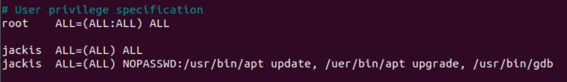

10. VSCode 调试
更全面的信息可以参考官方 调试手册 ，以下记录我用 VSCode 调试的一些经验。
10.1. 调试配置
想要在 VSCode 里调试，需要配置两个文件 tasks.json 和 launch.json 。
tasks.json：用于构建任务，也就是编译链接程序。
launch.json：用于配置调试环境，例如调试器（gdb），可执行文件路径等。
这两个文件按 F5 后会自动在 .vscode 目录下生成。
10.1.1. tasks.json
一般默认生成的 tasks.json 文件如下：
{
"version": "2.0.0",
"tasks": [
{
"type": "shell",
"label": "C/C++: gcc build active file",
"command": "/usr/bin/gcc",
"args": [
"-g",
"${file}",
"-o",
"${fileDirname}/${fileBasenameNoExtension}"
],
"options": {
"cwd": "${workspaceFolder}"
},
"problemMatcher": [
"$gcc"
],
"group": "build"
}
]
}
我们需要关注的选项有：
“lable”：任务标签，需与 “preLaunchTask” 保持一致。
“command”：需要执行的命令，可以是一个外部程序或者 Shell 命令。
“args”：传递给 “command” 的参数。
深入理解 tasks.json 文件的作用与 “command” 选项的用法，我们就能灵活地配置构建工程。
tasks.json 文件是用来构建工程的，当我们按 F5 进行调试时，VSCode 首先会执行 tasks.json 文件里 “command” 选项后的命令，并传入 “args” 参数，这样整个工程就被重新编译链接一遍了。
以 hello.c 文件和上述 tasks.json 为例，按 F5 进行调试时，最终会在命令行执行下述命令构建工程：
/usr/bin/gcc -g main.c -o main
当然，如果一个工程有多个文件，”command” 就不能是简单的 gcc 了，需要根据实际的构建系统选择。
如果构建系统使用的是 Makefile ，那我们可以配置
{
"command": "make",
"args": []
}
这样在构建项目时就会使用命令
make
这跟我们平时使用 make 构建项目是一致的。
又比如配置 Zephyr 环境，
{
"command": "west",
"args": [
"build",
"-b",
"native_posix",
]
}
这样在构建项目时相当于执行命令
west build -b native_posix
10.1.2. launch.json
launch.json 文件用于配置调试环境。一般默认生成的文件如下：
{
"version": "0.2.0",
"configurations": [
{
"name": "gcc - Build and debug active file",
"type": "cppdbg",
"request": "launch",
"program": "${fileDirname}/${fileBasenameNoExtension}",
"args": [],
"stopAtEntry": false,
"cwd": "${workspaceFolder}",
"environment": [],
"externalConsole": false,
"MIMode": "gdb",
"setupCommands": [
{
"description": "Enable pretty-printing for gdb",
"text": "-enable-pretty-printing",
"ignoreFailures": true
}
],
"preLaunchTask": "C/C++: gcc build active file",
"miDebuggerPath": "/usr/bin/gdb"
}
]
}
我们需要关注的选项有：
“program”：可执行文件的的路径，相对路径或绝对路径都可以。
“args”：运行程序时传递的参数。
“stopAtEntry”：是否在入口处停止，若为 true 在调试时会默认在 main() 处停止。
“environment”：配置程序运行的环境变量。
“preLaunchTask”：调试会话启动前运行的任务，需与 tasks.json 里的 “label” 一致。若没有该选项，则按
F5时会直接使用 “program” 程序调试，不会再试图重新编译一次。“miDebuggerPath”：调试器的路径，用途在后面有介绍。
VSCode 预定义了一些变量，可以在 Variables Reference 查看意思。
10.2. 调试技巧
10.2.1. VSCode 以 root 权限运行程序
有时候我们的程序需要访问硬件资源，这一般需要 root 权限，而 VSCode 一般是在用户权限下启动的，这就需要特殊配置 VSCode 才能调试程序。
下面介绍如何利用 VSCode 以 root 权限调试程序。
首先需要注意到 launch.json 文件里的 “miDebuggerPath” 这个选项，它是调试器的路径，如果这个调试器可以以 root 权限运行，那么就达成了我们的目的了。
在 /home/user_name 目录下创建文件 gdb，user_name 需要替换为实际的用户名。
然后编辑该文件 vim gdb，加入下述内容：
sudo /usr/bin/gdb "$@"
给 gdb 添加执行权限，
chmod +x gdb
在修改 “miDebuggerPath” 成为
{
"miDebuggerPath": "/home/jackis/gdb"
}
即可。这样我们就可以在 VSCode 里以 root 权限调试程序了，只不过每次都需要输入密码，因为有一个 sudo 过程。
为了解决这个麻烦，我又在网上找到了方法，将 /home/user_name/gdb 加入 sudo 的免密认证即可。
输入
sudo cp /etc/sudoers ~/sudoers.bak
sudo visudo
编辑 /etc/sudoers 文件，修改成下述内容即可，

其中 jackis 是我的用户名，需要根据实际用户名替换。
NOPASSWD:后的命令 sudo 时都不需要密码。
参考：